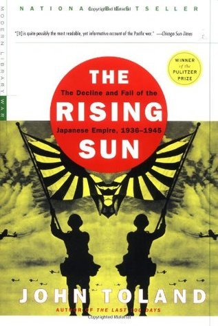

"The Rising Sun: The Decline & Fall of the Japanese Empire, 1936-45"
- Read on 2024-08-27
- Rating: ️️️️️
- Format: üéß (41 hours 9 minutes)
This gave me the best insight yet of the war in the Pacific theater. It dragged on for quite a while, and gave insights that were impossible to know (like the thoughts of random people as they died). Despite that, the perspective of the Japanese leadership never felt more clear than in this book. I still don't understand (nor do I anticipate ever understanding) the Japanese version of honor. What an atrocious war the whole thing was, and the descriptions of the immediate effects of the two bombs were appropriately graphic. Regardless, I'm not sure I can recommend this book to anybody except WWII enthusiasts.